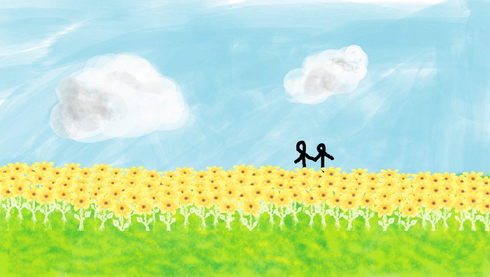

Continuar
Toca para comenzar
Algo
Cerrar
Gracias por todo :3
Zorra productions
Dibujado con Paint
Sonido ...
Siempre hay algo de lo que estar agradecido, y ...
para mi tu compañia es algo de lo que estare agradecido...
para el resto de mi vida
Finalizar